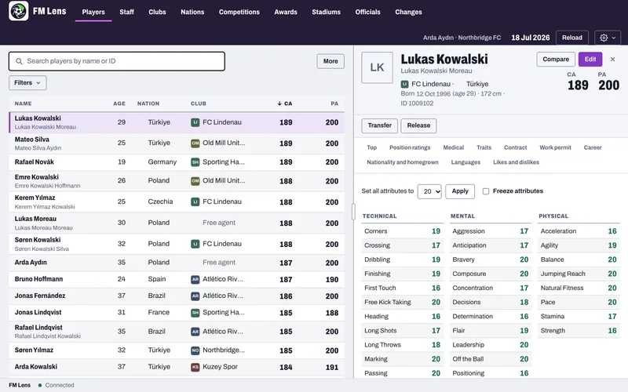

A free FM27 editor for Mac
FM Lens is a live editor for Football Manager 27 that runs on Apple Silicon and Intel Macs from one download. It edits the career you have loaded while FM runs, and every feature is free.

What you need
- A Mac with Apple Silicon or Intel.
- Football Manager 27 from Steam.
- A copy of your save to edit.
Set up on a Mac
- Open the disk image and drag FM Lens onto Applications.
- The first time, macOS cannot check the app: open System Settings › Privacy & Security and choose Open Anyway.
- Save and quit FM, quit Steam, and choose Set up in FM Lens. This adds a small helper that FM loads when Steam starts it.
- Start FM from Steam, load the copy of your save and choose Connect.
What you can edit
- Attributes, CA and PA, positions, traits and personality.
- Contracts, and club money and facilities.
- Transfers, swaps, loans and releases, made by FM itself.
- Injuries, bans, fitness and morale, for one player or the whole team.
- Freezes for a player's attributes or your club's money.
Questions
Does it work with FM27 from other stores?
No. FM Lens needs Football Manager 27 from Steam.
Can I take the helper out again?
Yes. Choose Remove the helper in FM Lens.
Is there a Windows version?
Yes. FM Lens for Windows runs on Windows 10 and 11.